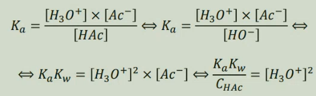
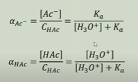

Química Analitica
Acerto de equações químicas
O acerto de equações químicas baseia-se na lei de Lavoisier, que, no contexto das reações, diz que as massas dos reagentes é igual à massa dos produtos, e por isso o nº de átomos de um dado elemento é igual ao nº de átomos desse mesmo elemento nos produtos.
Tomando como por exemplo a seguinte reação (não acertada):

1. Acertamos os carbonos e os hidrogenios nos produtos já que nos reagentes só há uma molécula que possui estes elementos:

2. Depois acertamos os oxigénios:

No entanto existem também outras reações mais dificeis de acertar, em particular de oxidação-redução. Nestes casos, é necessário separar a equação nas semireações de oxidação e de redução, e ainda considerar o tipo de meio (ácido ou básico).
Em meio ácido, vamos considerar a equação (não acertada) da reação de oxidação-redução do ferro(II) e do ião dicromato:

1. Identificamos as semireações de oxidação e redução (sem acerto):


2. Acertamos os elementos que não sejam oxigénios ou hidrogénios:

3. Acertamos os oxigénios por adição de água:

4. Acertamos os hidrogénios por adição de protões H+:

5. Acertamos as cargas elétricas por adição de eletrões:

6. Multiplicar cada semi-equação de modo a obter um número de eletrões cedidos na oxidação igual ao número de eletrões captados pela redução:

7. Somar as duas equações e simplificar:

8. Escrever a equação da reação final e verificar se está tudo correto:

Já em meio básico/alcalino, vamos considerar a mesma equação (sem acerto):
Seguimos os passos 1-3 do meio ácido, obtendo:
4. Para acertar os hidrogénios, por cada H em excesso, adiciona-se, no mesmo membro, um ião OH- e, no membro oposto, uma molécula de H20:

Os restantes passos são iguais aos em meio ácido, pelo que se obtém:
Titulação ácido-base
O objetivo de uma titulação é determinar a quantidade de uma determinada espécie numa amostra. Isto envolve a adição gradual de um reagente que reage totalmente com a substãncia de interesse.
O ponto de equivalência corresponde ao ponto em que as quantidades de titulante e titulado estão nas proporções estequiómetricas da reação. No caso da titulação ácido-base, usa-se para detetar este ponto geralmente um indicador ácido-base ou eletrodos de pH.
Por vezes, ao realizar os cálculos associados a uma titulação ácido-base utilizam-se aproximações que facilitam o processo, como por exemplo, não considerar os iões H3O+ provenientes da autoionização da água no ínicio ou final da titulação.
Sendo assim, de modo a realizar os cálculos sem recorrer a aproximações são necessárias as seguintes equações:
- Produto iónico da água: Kw = [H3O+]*[OH-]
- Constante de acidez: Ka = [H3O+]*[A]-/[HA]
- Balanço de massa do ácido: CHA = [A-] (para ácidos fortes); CHA = [A-]+[HA] (para ácidos fracos)
- Balanço de massa da base: CBOH = [B+] (para bases fortes); CBOH = [B+]+[BOH] (para bases fracas)
- Balanço de cargas: [H3O+]+[B+] = [A-]+[OH-]
- Balanço protónico: [H3O+]+[HA]=[OH-] (é necessário usar esta equação no equilibrio de ácido/base fraca, pois os balanços de massa, neste caso, são equivalentes)
Exercício
Pretende-se titular 1,000L de ácido acético (fraco) 0,100M com NaOH 0,100M. Qual o pH no ponto de equivalência, sabendo que pKa=4,756?
Aproximações (neste caso é necessário usar o balanço protónico porque os balanços de massa "unem-se" numa só equação):
Resolução:
Fração molar(α)
Corresponde à fração da concentração de determinada espécie face à concentração analítica. A soma das frações molares de todas as espécies é igual a 1.
Exemplo para um ácido monoprótico (ácido acético):
Exemplo para um ácido diprótico (glicina):

A forma de calcular as frações molares para ácidos mais protonados é analoga à dos dipróticos:
[H3O+]nº máximo de H++[H3O+]nº máximo de H+-1*Ka1+[H3O+]nº máximo de H+-2*Ka1*Ka2+...
Titulação de Complexação
Numa titulação por complexação dá-se a reação entre um ião metálico que atua como ácido de Lewis (aceitador de eletrões) com um ligante que atua como base de Lewis (Doadores de eletrões), formando um complexo. As constantes de equilibrio para este tipo de reação chamam-se constantes de formação/estabilidade (Kf/Kest) Para detetar o ponto de equivalência utiliza-se um corante que se liga ao ião metálico possuindo determinada cor, mas como o ligante tem maior afinidade com o ião, no ponto de equivalência há mudança de cor.
Um dos ligantes mais utilizados é o EDTA, que é um ligante hexadentado, ou seja capaz de se ligar a um ião metálico por seis grupos.
A denticidade está relacionada com o número de "zonas" que do ligando ao átomo central, quando se possui uma rede continua de átomos, ou ao numero de ligações diferentes a átomos diferentes e não continuos. Um ligante multidentado também pode ser chamado de quelante.
A hapticidade está relacionada ao número de ligações que o átomo central efetua a uma certa zona de átomos contínuos.
Quando o metal é capaz de se ligar com mais do que um ligando, verificam-se múltiplas reações a que se podem associar as constantes de formação globais/acumulativas(β), em que β é o produto das Kf:
A fração molar para os complexos metálicos são análogas às das titulações ácido-base:
Uma reação de complexação pode ser afetada pelo pH da solução, já que, por exemplo, quanto menor o pH, maior a concentração de H+, pelo que os ligantes poderão ligar-se aos protões, diminuindo a eficácia do agente complexante. Sendo assim, definem-se ainda constantes de formação condicional/efetiva (Kf´), que dependem do pH da solução:
Exercício
Titularam-se 100,0 mL de uma solução de nitrato de ferro(III), Fe(NO3)3, de concentração desconhecida, com uma solução de EDTA de concentração 0,0100 M. Na titulação gastou-se 10,00 mL da solução de EDTA até que o Eriocromo T mudasse de cor (ponto de viragem). Utilizou-se uma solução tampão de NaH2PO4/Na2HPO4, com uma proporção molar de 0,5/4. Sabe-se que:
- Log(Kf) = 25,1
- pKa(EDTA): 0; 1,5; 2,0; 2,66; 6,16; 10; 24
Qual o pFe para VEDTA = 5,000mL; VEDTA = 10,000mL e VEDTA = 20,000mL
Antes do ponto de equivalência (5mL):
No ponto de equivalência (10mL):
No ponto de equivalência (20mL):
Oxidação-Redução
Oxidação e redução são processo que envolvem a transferência de eletrões entre átomos e moléculas. Oxidação significa perder eletrões e redução é ganhar eletrões. Um oxidante tem tendência a oxidar outras espécies, enquanto se reduz, e vise-versa para os redutores.
O estado/número de oxidação é a carga hipotética de um átomo se todas as suas ligações fossem puramente iónicas. Numa molécula ou átomo a soma de todos os números de oxidação deve ser 0, já em iões deve ser igual à carga do ião. De modo geral, o oxigénio apresenta um número de oxidação -2 e o hidrogénio +1, sendo possível calcular os outros estados de oxidação dos átomos na molécula (isto nem sempre acontece, por exemplo, em O2 o oxigénio possui um estado de oxidação 0)
Potencial elétrico é a capacidade que um corpo carregado tem de realizar trabalho (atrair ou repelir) outras cargas elétricas. A energia potencial adquirida por uma carga q é diretamente proporcional ao valor de q, pelo que o quociente é constante e chama-se o potencial elétrico nesse ponto do espaço: V = Epe/q. A unidade SI para o potencial elétrico é o Volt (V). O potencial elétrico UE de uma carga Q, a uma distância r é dada por: UE = 1/(4πε0) * Q/r, em que 1/(4πε0) corresponde à contante de Coulomb, ke, em que ε0 é a constante de permissividade do vácuo. Sendo assim a energia potencial elétrica é dada por EE = UE*q, ou seja E = Qq/(4πε0r).
O potencial da da redução de H+ que origina água é definido como sendo de 0 V.
A energia livre de Gibbs é a grandeza, que em reações químicas, se minimiza no equilibrio químico. A variação da energia de Gibbs ΔrGº para condições padrão é dada por: ΔrGº = -RTlnK em que R é a constante de gases ideais, T a temperature em Kelvin e K a constante de equilibrio da reação. Tem-se então que ΔrG = ΔrGº + RTlnQ em que Q é o quociente de reação. Sabendo que ΔrG = -nFE, em que n é o número de eletrões transfiridos numa reação redox, F é a constante de Faraday e E é o potencial de redução da célula. Obtem-se então a equação de Nerst: E = Eº - RTlnQ/(nF)
O potencial padrão de equilibrio de uma pilha é dado pela diferença entre os potenciais de redução dos elétrodos: ΔEº = Eºred(reduzido) - Eºred (oxidado)
Uma desproporcionação consiste em duas móleculas idênticas originarem duas diferentes. No caso das reações redox um dos elementos no produto terá um diferente número de oxidação. Um exemplo seria:

Já uma comproporcionação consiste em dois reagentes que contenham o mesmo elemento com diferente número de oxidação originem um composto com um outro número de oxidação intermidário. É o oposto de desproporcionação. Um exemplo seria:
Um diagrama de Latimer para um dado elemento mostra uma linha horizontal que conecta espécies de diferentes estados de oxidação. Na ligação de cada espécie é apresentado o potencial de redução padrão.
Para calcular o potencial de redução para espécies não adjacentes é necessário somar as variações de energia de Gibbs padrão, pelo que se usa ΔrG = -nFE, ou então usa-se a equação simplificada: Eº = (n1Eº1+n2Eº2)/n1+n2, em que n é o numero de eletrões transferidos ou a mudança no estado de oxidação em módulo.
Um diagram de Frost representa reações redox para determinadas espécies químicas, em que se representa ΔG/F ou -nEº ou NEº (em que N é a mudança no estado de oxidação) em função do número de oxidação. Neste gráfico a espécie mais estável em determinado meio (ácido ou básico) é o ponto mais baixo no diagrama.
Neste tipo de gráfico, a inclinação da reta indica o potencial padrão dessa reação.
Um diagrama de Pourbaix é uma representação das possíveis fases de equilibrio de um sistema eletroquímico, em que no eixo yy está o potencial e no eixo xx o pH.
Os cálculos numa titulação redox são semelhantes às outras titulações, com o pormenor de que se pode calcular o potencial em cada momento (tanto para as semireações como para o potencial "total"), sendo que no ponto de equivalência o potencia é dado por Eº = (n1Eº1+n2Eº2)/n1+n2